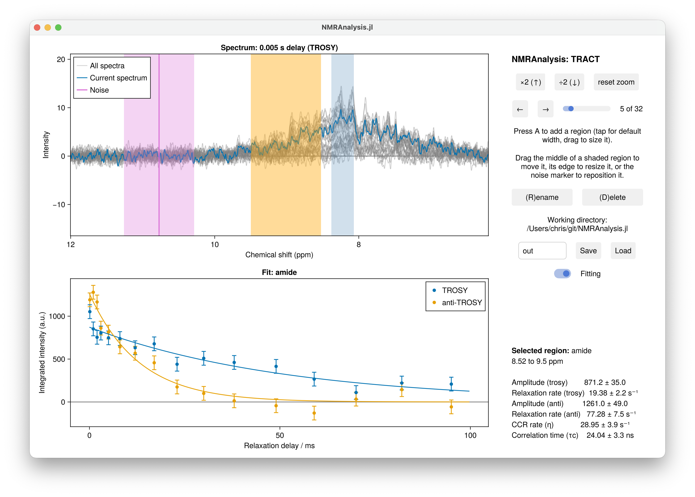

TRACT
TRACT (TROSY for Rotational Correlation Times) estimates the rotational correlation time τc of a protein from the difference in relaxation rates between the TROSY and anti-TROSY components of the ¹⁵N-¹H doublet. It needs two experiments, recorded as a pair, and gives a global tumbling time in a few minutes of measurement rather than a full relaxation analysis.

Running the analysis
using NMRAnalysis
results = tract("12", "13") # TROSY experiment, then anti-TROSYCall tract() with no arguments to be asked for the two folders.
Both experiments are loaded into one dataset and share a single integration region, so that the two rates are measured over exactly the same signal. The analysis window opens with the region set to the 7.5 to 9.5 ppm amide envelope, which is what TRACT is normally measured over. Adjust it if your spectrum calls for it, put the noise marker somewhere empty, and press Save.
The TROSY and anti-TROSY decays are plotted in separate colours, and the results panel gives the two rates, the cross-correlated relaxation rate η, and τc.
Relaxation delays
The delays are read from each experiment's own vdlist. Pass tau to give them explicitly, for both experiments at once, and you are asked for them if neither is available.
tract("12", "13"; tau=[0.0, 0.01, 0.02, 0.04, 0.08])What is fitted
An exponential decay to each of the two series,
\[I(t) = A \exp(-Rt),\]
from which the cross-correlated cross-relaxation rate follows as
\[\eta_{xy} = \frac{R_\mathrm{anti} - R_\mathrm{TROSY}}{2},\]
and τc by inverting
\[\eta_{xy} = f \left[ 4 J(0) + 3 J(\omega_N) \right], \qquad J(\omega) = \frac{2}{5} \frac{\tau_c}{1 + \omega^2\tau_c^2},\]
where $f$ collects the dipolar and CSA constants for the amide group: the N-H bond length (1.02 Å), the ¹⁵N chemical shift anisotropy (160 ppm), the angle between the two tensors (17°), and the static field.
| Parameter | Meaning |
|---|---|
A | Amplitude of each decay |
R | Relaxation rate of each component, s⁻¹ |
etaxy | Cross-correlated relaxation rate, s⁻¹ |
tauc | Rotational correlation time, ns |
η and τc describe the pair rather than either component, so they are recorded once, on the TROSY series:
results = tract("12", "13")
trosy = first(r for r in results if r.group.which == :trosy)
param(trosy, :tauc) # ns, with uncertaintyAssumptions
TRACT assumes isotropic tumbling of a perfectly rigid molecule. Internal motion, flexible termini and disorder all reduce the measured η, so a reported τc is a lower bound for a molecule that is not rigid. Read it as an effective correlation time, not a hydrodynamic one.
TRACT experiments are not currently recognised by analyse, because they need a pair of files rather than one. Call tract directly.
Citation
Lee, D., Hilty, C., Wider, G., & Wüthrich, K. (2006). Effective rotational correlation times of proteins from NMR relaxation interference. Journal of Magnetic Resonance, 178, 72-76. doi: 10.1016/j.jmr.2005.08.014